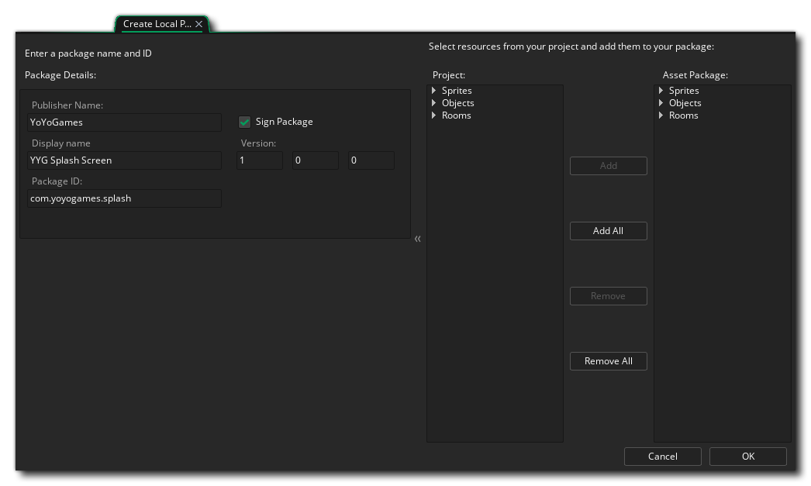
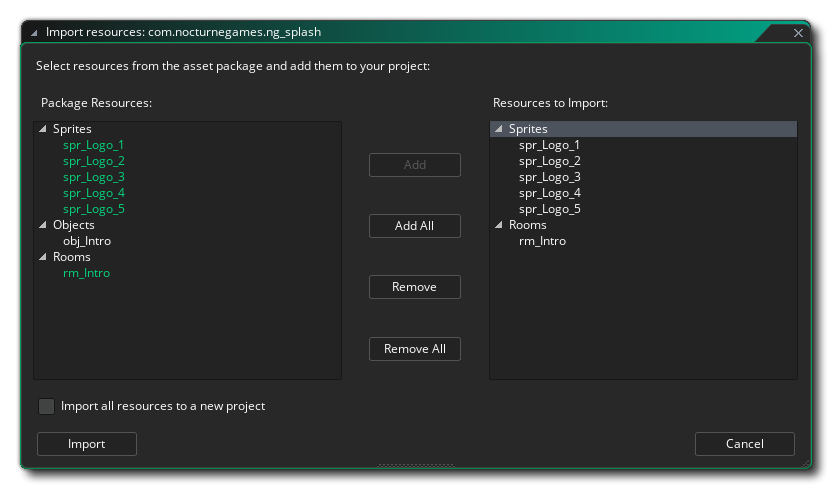

Under the Tools Menu you have two options for creating and importing Local Asset Packages. A Local Asset Package is a group of resources saved using the *.yymp file format that can be easily installed into existing projects. What this means is that you can create your own library of packages for commonly used resources, like script libraries, splash screen intros, menu systems, etc... without having to use the YoYo Games Marketplace.
To create an asset package, you must first have created the resources that you want to save out in a project, and then from the Tools menu select the option Create Local Package. This will open the following window: 
In this window you can supply an optional Publisher Name and a required Display Name and Package ID. The Package ID will be used to generate the file name that the package will be saved with, and will be automatically appended with the *.yymp file extension on creation. You can also set the version number of the package, and choose to sign it or not (this is off by default). Signing a package requires you to have created a signing certificate (you can do this from the Marketplace Preferences, which is explained on this page), and means that any asset that has been signed will not be able to be imported if it has been tampered with after creation.
Once you have filled in the details of the package, you can then go ahead and select the resources that you want to include from the "Project" section on the right (using the left mouse button
or a combination of
/
and along with the left mouse button). Selected resources can be moved to the "Asset Package" view, using the Add or Add All buttons and can be removed again using the Remove and Remove All buttons.
Once you are happy with the resource selection and have filled in the required details, clicking the Ok button will open a file explorer where you can choose the location to save the package to. Once selected the package will be created and a confirmation window will be shown, with an option to open the package location in the OS file explorer.
There are two ways to import a Local Asset Package: the first is simply to drag the *.yymp file from an explorer window onto GameMaker Studio 2, and the second is to select the "Import Local Package" option from the Tools Menu. When using the Tools Menu, an explorer window will open and you can browse to the package location then select it for importing. Either way will then open the following window in GameMaker Studio 2: 
On the left are the contents of the package and on the right are the parts of it that you want to import. You can select one or more resources from the package (using the left mouse button
When you have everything ready, you can then click the Import button to add the selected resources to your project. Note that you also have the option to Import all resources to a new project, which will create a new project for you (and prompt you to give a location to save it to) and then add the selected resources to that.